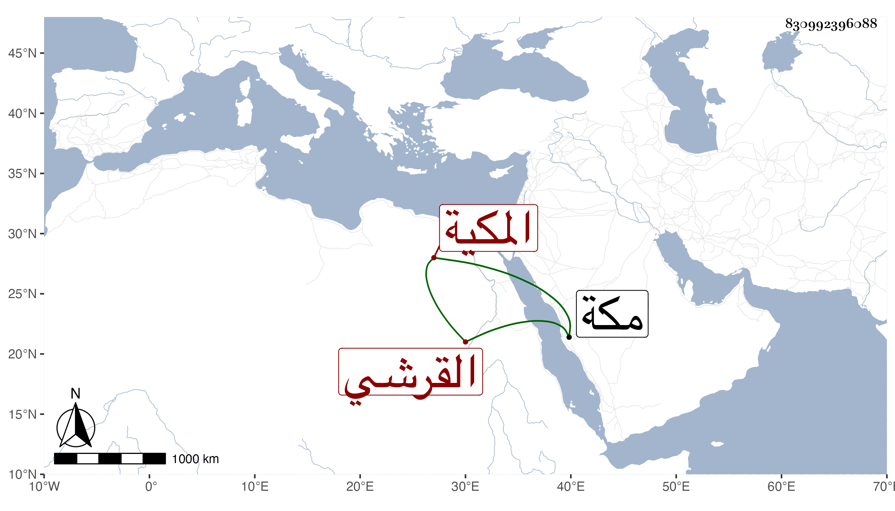

0902Sakhawi.DawLamic.ITO20230111-ara1.EIS1600.830992396088
Biography ID: 830992396088
859
أم الحسين ابنة أبي الفضل العباس بن أبي المكارم محمد بن أبي البركات محمد بن أبي السعود محمد بن حسين بن علي بن أحمد بن عطية بن ظهيرة القرشي المكية الماضي شقيقها عبد الله ، وأمهما أم هانئ ابنة علي بن أبي البركات . ولدت سنة ثمان وثلاثين وثمانمائة بمكة ، وأجاز لها زينب ابنة اليافعي وسارة ابنة ابن جماعة والزين الزركشى وابن الفرات وابن ناظر الصاحبة والعلاء بن بردس ، وتزوجها الشرف أبو القسم وأولدها أبا المكارم وغيره ، وماتت في ربيع الاول سنة ثلاث وسبعين بمكة .
